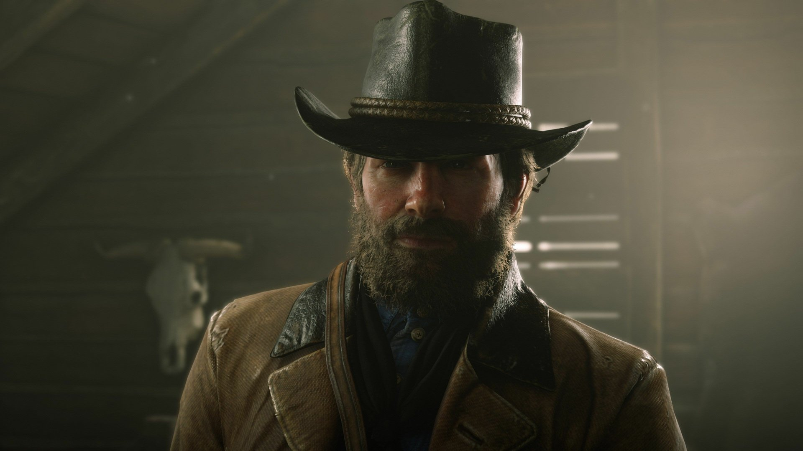

His development and design was inspired and made around his voice actor, Roger Clark, who doesn't look as good as him, but still good enough to imnpress the ladies.
They also used motion sensors to capture his motion and transfer the motion to in-game motion so Arthur's motion looks like human motion.
Here's a comparison of Arthur and Roger for you to see: